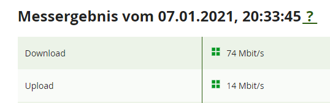

{kind=link}
Danke!

Bitte auch von dir eine Rückinfo, ab wann dann alles gepasst hat.
hallo
wir haben ein schreiben bekommen das unser altvertag mit 75mbit auf gigakarft 150 geändert wird. Seit wochen aber nur 35 Mbit im speedtest..
ich hatte eig selten speedprobleme (75 Mbit), aber diesen monat geht nur mehr 35 Mbps laut diversen speedtests.
haben tv auf streaming umgestellt diesen monat also mehr download als sonst (nicht von magenta, sowas netflix)
bin ich gedrosselt worden? ist unlimitiert wirklich unlimitiert beim download volumen?
gibt es eine möglichkeit das neue modem zu bekommen? die connect box hat doch diesen puma6 bug..
kann man magenta support nur telefonisch erreichen? suche vergebens ein email oder formular für den support?
ja ich verwende ein LAN kabel
Bearbeitet von 9527653423409
Also von einer Drosselung ist mir nichts bekannt - unlimitierte Daten sind unlimitiert. Außer es würden wirklich ungewöhnliche Datenloads erkannt aber selbst da würde es eine Benachrichtigung geben. Da kann der Support was dazu sagen.
Allerdings gab es im Dezember tatsächliche teils heftige Auslastungen in allen Netzen in Österreich - also du bist da echt nicht alleine.
Bei dir wundert mich allerdings der niedrige Upload - da sollten wir dran bleiben.
Was hast du für Werte z.B. bald in der Früh?
vor 2 Stunden schrieb 9527653423409:hallo
wir haben ein schreiben bekommen das unser altvertag mit 75mbit auf gigakarft 150 geändert wird. Seit wochen aber nur 35 Mbit im speedtest..
ich hatte eig selten speedprobleme (75 Mbit), aber diesen monat geht nur mehr 35 Mbps laut diversen speedtests.
haben tv auf streaming umgestellt diesen monat also mehr download als sonst (nicht von magenta, sowas netflix)
bin ich gedrosselt worden? ist unlimitiert wirklich unlimitiert beim download volumen?
gibt es eine möglichkeit das neue modem zu bekommen? die connect box hat doch diesen puma6 bug..
kann man magenta support nur telefonisch erreichen? suche vergebens ein email oder formular für den support?
ja ich verwende ein LAN kabel
Ich habe exakt das gleiche Problem, auch über Lan Kabel, mit den selben Download u. Upload Geschwindigkeiten. Auch ich hatte vorher nie Probleme mit dem Speed.
Seit wann habt ihr diese Probleme?
Erst in den letzten Tagen oder schon länger?
Erst als ich das Schreiben zur Tarifumstellung erhielt (letzte Woche), habe ich einen Speed Test gemacht. Da fiel es mir auf. Seither jeden Tag unverändert. Mein aktuelles Paket (noch - 28.02.2021) Take it Super Max wird dann umgestellt auf gigakraft 150.
War möglicherweise vorher auch schon eingeschränkt.
Aktuell sind die Netze sehr ausgelastet.
Macht bitte mal einen Test nicht zur Primetime, sondern bald in der Früh. Dann sieht man, was möglich ist und ob es ein Auslastungsthema ist.
Auffallend ist aber die Drosselung auf genau 50%! Wenn dies wegen dem Lockdown so ist, habe ich natürlich Verständniss dafür. Trotzdem hoffe ich daß dies bald berichtigt wird. In 2 Monaten soll ich auf 150 Speed upgegradet werden (teurer, die 75 waren genug für mich), jetzt schafft Magenta aber nur 35? Ich hatte mit UPC niemals Probleme(andere schon vielleicht).
hi gomerafan, wir scheine da ganz gleich da zu stehen.. take it unstellung auf gigakraft 150.. bei mir auch bis bzw am 28.2.2021
gomerafan hat recht! für mich sieht das auch nach einer drossel aus, wenn das netz in die knie geht würde der wert doch schwanken.. immer genau die 35 Mbit wie gomerafan auch schreibt. egal welche uhrzeit, über die 35 komm ich nicht mehr, zu stoßzeiten vielleicht nur 30... bei mir is das so seit ca mitte des monats..
also in 2 moanten bekomm ich mehr speed, dafür jetzt nur die hälfte?
auch die umstellung ist fragwürdig... anstatt auf den gigakraft 75 tarif umzustellen (der genau die gleiche "leistung" beinhaltet) wird man auf einen "gigakraft 150", den es offiziell nichtmal gibt auf der website, gestellt. naja so kann tmobile 3€ mehr verrechen anstatt 2€ weniger..
bin am überlegen gleich den 250Mbit tarif zu upgraden.. dieser "gigakraft 150" spezialtarif is doch teuer in relation zu gigakraft 250...
du kannst dich sicher an den support wenden und auf gigakraft 75 stellen lassen, mir wars auch immer schnell genug.. aufgrund der vertragsänderung haben wir ja auch das kündigungsrecht..
Zitatkann man magenta support nur telefonisch erreichen? suche vergebens ein email oder formular für den support?
da habt ihr auch nichts gefunden? toll
von so einer "lockdown" drosselung sollte man aber informiert werden..bezahlt wird von uns ja wie immer
Bearbeitet von 9527653423409Seit der Übernahme von UPC hatte ich einige Beeinträchtigungen Internet/Telefon wegen automatischer Neustarts des Modems. Mehrmals musste ich das Modem vom Strom trennen, erst dann (nach manchmal sehr langen) Neustarts lief wieder alles. Liebes Magenta Team, bitte ***********t uns nicht! Ich bin ca. 20 Jahre Kunde dieses Netzes (damals noch Chello......), so instabil wie jetzt war es (für mich) noch nie.
Ich vertraue darauf ihr wollt zufriedene Kunden, die ihre bezahlte Leistung auch erhalten. Guten Rutsch
Bearbeitet von gomerafan
Also - um es mal zusammenzufassen.
Wir reden da von Gigakraft 150 - aber die mobile Lösung oder?
Was habt ihr da für eine Verbindung? 4G oder 5G?
Wenn es zu jeder Tageszeit gleich ist, dann ist das natürlich schon merkwürdig.
Ist das wirklich so?
So wie ich das verstanden hätte geht es bei @gomerafan un einen DSL Anschluss (alter UPC Take IT Super Max Tarif) und bei @9527653423409 um einen alten UPC Coax-Kabel Tarif. Im Zuge dessen, dass seitens Magenta die alten Tarife auf höhere mit Sokü-Möglichkeit umgestellt werden, ist wohl, bevor die Umstellung in Kraft tritt, etwas schief gegangen und die Anschlüsse wurden gedrosselt.
vor 28 Minuten schrieb Christian_E:Wir reden da von Gigakraft 150 - aber die mobile Lösung oder?
Was habt ihr da für eine Verbindung? 4G oder 5G?
Ein gigakraft 150 über Mobilfunk wäre mir da nicht bekannt. Entweder Flex 150 oder einer der gigakraft 5G 250 oder 500 Tarife.
Es gäbe neben den Hotlines auch ein Kontaktformular , bei dem ihr ein Schreiben hochlanden können. Ihr solltet euch da auf jeden Fall melden
Alles klar... Erklärt damit den Istzustand.
Ja dann auf alle Fälle melden - die Drosselung kann ja so nicht sein.
Bitte haltet uns am Laufenden - ich würde da aber gleich bei der Hotline dran bleiben.
Hallo!
@9527653423409 habe genau das selbe Problem.
Mir ist auch vor einiger Zeit aufgefallen, dass ich nur mehr 35 MBit (statt 75 MBit, Fiber Power) habe.
Dachte mir damals, dass ist weil das Netz gerade überlastet war.
Nun habe ich auch ein Schreiben bekommen, dass mein "bestehendes Produkt 'Fiber Power' mit 35Mbit" (?) auf "Internet Fiber 150 mit bis zu 150 Mbit" (später auch als "gigakraft 332" bezeichnet) geändert wird.
Beides "Produkte" findet man nicht auf der Homepage, allerdings "gigakraft 75" welches genau meinem bisherigen Anschluss entspricht und sogar "nur" 30 Euro mtl. wäre.
Ich fühle mich verar.... !
Nicht nur, dass die scheinbar ihren eigenen Produkte nicht wirklich kennen, mein Fiber Power war kein 35 Mbit Anschluss.
Sondern, dass sie einen von 75 Mbit (für die man zahlt) auf 35 Mbit drosseln und dann sagen man bekommt (für einen Aufpreis) einen 115 Mbit speedup.
Warum nicht einfach das auf der Hand liegende "gigakraft 75"?!
@NTM ja du bist richtig... zum kontaktformular... da kann ich ja gleich ein fax schicken.. ? nicht sehr zeitgemäß oder?
ZitatBeides "Produkte" findet man nicht auf der Homepage, allerdings "gigakraft 75" welches genau meinem bisherigen Anschluss entspricht und sogar "nur" 30 Euro mtl. wäre.
Ich fühle mich verar.... !
Nicht nur, dass die scheinbar ihren eigenen Produkte nicht wirklich kennen, mein Fiber Power war kein 35 Mbit Anschluss.
Sondern, dass sie einen von 75 Mbit (für die man zahlt) auf 35 Mbit drosseln und dann sagen man bekommt (für einen Aufpreis) einen 115 Mbit speedup.
Warum nicht einfach das auf der Hand liegende "gigakraft 75"?!
genau meine rede.. aber mit gigakrtat 75 würde tmobile auf 2€ verzichten.. oh no!
Bearbeitet von 9527653423409so.. suppoort meinte ich hatte im altvertrag 35Mbit + 35Mbit zusatzpaket (??) durch umstellung ist der zusatz wegefallen?! aber die umstellung ist doch erst am 28.2.2021.... naja was soll man sagen
also anrufen.... hat ca 40 minuten gedauert... angeblich werde ich jetzt gleich auf 75 gestellt...
Bearbeitet von 9527653423409
Danke mal für die Info. Das ist in der Tat nicht wirklich transparent.
Halt uns doch bitte am Laufenden, wenn bei dir die Geschwindigkeit wieder rauf geht. Danke!
Ich war sicher ich bin nicht der Einzige. Dann werde ich im neuen Jahr auch dort anrufen. Danke an alle hier.
Danke!

Bitte auch von dir eine Rückinfo, ab wann dann alles gepasst hat.
wie lange dauert so eine umstellung? ich hab noch immer 35 Mbit...
auf meinen rechnungen stehen die Mbit nicht drauf is das bei euch auch so? auf rechnung steht immer nur "Take IT super max (Digital Telefon + Fiber Power)" ? wenn ich mich im kundenportalö anmelde steht auch nur "Fiber Power + Tel.)? kann man da gar nichts einstellen im kundenportal? oder nur bei mir so? auch is MEIN NAME UND MEINE ADRESSE IN GROSSBUCHSTABEN GeSCHRIEBEN.
Bearbeitet von 9527653423409
Ja da waren jetzt die Feiertage dazwischen. Ich denke in der kommenden Woche sollte die Umstellung passieren.
Ist halt jetzt die Urlaubs- und Feiertagszeit - da geht erfahrungemäß alles langsamer....
wie lange dauert sowas ohne feiertage normalerweise?
wenn ich im kundenportal sehen könnte das da was umgestellt wird wär ich schon beruhigt.. denke aber da ändert sich nichts mehr..
Bearbeitet von 9527653423409
Das kann ich dir leider nicht sagen.
Im Grunde ist es ja nicht viel Arbeit aber wenn es viele Anträge gibt, die zu bearbeiten sind, dann kann das den Prozess verlangsamen.
Ggfs. kann man eh nur bei der Hotline den Status abfragen.
Gibt es keinen Telefonsupport über das Festnetz mehr? Ich finde nur eine Handynummer für den technischen Support: 0676 200 7777
Das darf doch wohl nicht sein, daß wenn Magenta einen Fehler macht der Kunde dann noch fürs Anrufen extra bezahlen muss!
Das dauert sicher länger, ich habe nur ein Wertkarten Handy, d.h. ich bezahle pro Minute.
Die Hotlinenummern:
https://www.magenta.at/hilfe-service/service
Aber ja, wenn deine Wertkarte das nicht inkludiert hat, dann gibt es nur die.
Fürs Bestellen (0800 676 300) gibt es Festnetz, für den Support nicht mehr......
hallo
wir haben ein schreiben bekommen das unser altvertag mit 75mbit auf gigakarft 150 geändert wird. Seit wochen aber nur 35 Mbit im speedtest..
ich hatte eig selten speedprobleme (75 Mbit), aber diesen monat geht nur mehr 35 Mbps laut diversen speedtests.
haben tv auf streaming umgestellt diesen monat also mehr download als sonst (nicht von magenta, sowas netflix)
bin ich gedrosselt worden? ist unlimitiert wirklich unlimitiert beim download volumen?
gibt es eine möglichkeit das neue modem zu bekommen? die connect box hat doch diesen puma6 bug..
kann man magenta support nur telefonisch erreichen? suche vergebens ein email oder formular für den support?
ja ich verwende ein LAN kabel
Bearbeitet von 9527653423409
Ja leider gibt es aktuell für den Support keine anderen Kanäle mehr. Bis vor ein paar Monaten gab es noch einen WhatsApp oder einen Facebook Kanal aber die wurden deaktiviert.
Wäre schön, wenn es da wieder zusätzliche Support Kanäle geben könnte.
Die 0800 676676 sollte ja noch gehen ?
Stimmt - habs gerade probiert.
Die geht noch, wird aber in diesem Kontext nicht mehr angeführt.
Aber wäre für diesen Zweck noch eine Option.

Werde ich versuchen, danke.
Halt uns bitte am Laufenden.
Ich hab das gleiche Problem. In dem Schreiben von Magenta steht sogar, dass ich derzeit angeblich nur 35 Mbit habe.
Der erste Support Support Mitarbeiter (nach 30 Minuten Warteschleife) war leider absolut nicht hilfreich, er hat mir aber bestätigt dass ich eigentlich fibre mit 70 MBit haben müsste.
Nach weiterverbinden und weiteren 30 Minuten in der Warteschleife wurde mir angeboten gleich kostenlos auf gigkraft75 (statt auf gigakraft150) umzustellen und die 27.- Servicepauschalte für diese Jahr als "Entschädigung" zu erlassen.
Das ist für mich so OK. Jetzt muss es nur noch funktionieren.

Das heißt man hat dich nun umgestellt?
OK - was hattest du vorher?
Mir wurde jetzt vom 2. Level Support geraten das Modem zu tauschen. Das werde ich jetzt wohl tun müssen. Die Leitung ist angeblich nicht das Problem. Ich werde später wieder berichten.
Das heißt Magenta tauscht dir das Modem oder was wurde vereinbart?
Im Grund gut, denn dann kannst du mal die HW ausschließen.
Das Modem ist 4 Jahre alt und soll getauscht werden. Ich nehme an weil es noch von UPC war. Defekt ist es sicher nicht, eher unerwünscht bei nun Magenta. Ich werde heute noch in ein Shop fahren, um noch heute ein Neues zu bekommen. Bin schon genervt mit dieser Umstellung...
Alle klar. Das glaube ich dir sofort.
Aber wenn im Nachhinein alles klappt, wäre es schön.
So, das Modem läuft, sieht genauso aus wie das Alte. Vorne ist jetzt das T-Mobile Logo und......
Alles wie vorher, nicht besser und auch nicht schlechter. Wieder wird gute Hardware verschrottet, die nicht kaputt ist. Genau so habe ich es erwartet. Der Fehler liegt bei T-Mobile, in der Leitung im Haus. Kann es sein dass hier jemand mitnascht, angezapft hat hier im Haus?
die haben unsere vertäge falsch ungstellt.. obwol erst ab märz die neuen gelten. hat nix mit deiner leitung zu tun.
ich warte noch immer auf die am tel. versprochen speedup das ich wieder auf meine 75 komme... deswegen hätt ich lieber schriftlichen kontakt.. werd morgen nochmal anrufen..
diese community hat auch keinen sinn ohne magenta support moderatoren.
übrigens ist der magenta speedtest offline
Bearbeitet von 9527653423409Ja da sind uns auch leider die Hände gebunden. Wir versuchen technisch zu helfen aber haben keinen Einblick in die Magenta Systeme oder Kundendaten. Sorry...
vor 6 Minuten schrieb 9527653423409:diese community hat auch keinen sinn ohne magenta support moderatoren.
Bei vielen Problemen und Anfragen können wir als Kunden oder Interessierte sehr wohl anderen helfen. Wird es allerdings zu sehr Vertragsspezifisch, sind uns natürlich die Hände gebunden da wir keinen Einblick auf Kundendaten haben. Dafür gibt es aber den Magenta Support .
Laut Support ist bei mir technisch von T-Mobile alles richtig eingestellt und jetzt ist auch das Modem neu. Ich habe auch einen Laptop per Lan versucht mit 100% alles richtig konfiguriert, Lan Kabel getauscht - das sind die Vorschläge dieses Supports. Ich glaube die wollen das wir kündigen!
hi gomerafan, gehts wieder bei dir? ich glaube wir mussen bei vertrags leuten anrufen nicht beim techniker..
konnte das problem bei einem von euch gelöst werden oder werden wir alle nur vertröstet und nichts passiert?
Leider hat sich gar nix geändert! Habs heute um 03h früh auch mal versucht, egal wann immer nur 35 Mbit, 3,5 Mbit Upload. Wir müssen uns unbedingt gegenseitig informieren, wir werden nur gemeinsam einen richtigen Weg finden.
Für alle die den Brief von Magenta bekommen haben dass sie von Fibre Power auf gigakraft umgestellt werden und jetzt nur mehr 30MBit haben...
Das Problem liegt nicht an der Technik. Magenta hat offenbar die alten Fibre Power 70 Anschlüsse intern als 2 Produkte angelegt (Fibre Power 30 + Speedboost). Für die Umstellung auf die gigakraft Produkte haben sie offenbar eines der beiden Produkte intern gekündigt (den "Speedboost"). Damit sind vermutlich alle Fibre 70 Anschlüsse auf 35Mbit zurückgefallen. Ich bin kein Magenta Mitarbeiter, daher nur meine Theorie.
Soweit ich feststellen konnte ist es weder der Technik möglich die 70Mbit wieder zu aktiveren, noch den Vertragsleuten das Speedboost Produkt wieder zu aktivieren.
Was bei mir funktioniert hat ist darauf zu bestehen dass man nicht automatisch auf gigakraft150 umgestellt werden will (wollte ich sowieso nicht), sondern kostenlos auf gigakraft75. Das können sie offenbar beim Vertragssupport umstellen. Damit hab ich zumindest meine 70 Mbit (in dem Fall sogar 75Mbit) wieder zurück.
Betrifft aber wie gesagt nur diejenigen die auch den Brief wegen der Umstellung auf gigakraft bekommen haben.
Vieln Dank für diesen Tip!
danke mario, hast du deine 70 bzw 75 Mbit schon wieder? hab die selbe auskunft bekommen mit 35+zusatzpaket siehe erste seite .... mir wurde auch gesagt ich werde umgestellt auf 75.. warte aber noch immer.
Bearbeitet von 9527653423409
https://verbraucherrecht.at/langsames-internet-upc-zahlt-nach-klage-des-vki/3638
Zwar damals noch unter UPC
: Doch war es ein ähnliches Problem mit eben zuwenig Speed. Den dort verlinkten Speed-Test sollten alle verwenden und als PDF abspeichern(über die Druckfunktion), und mehrmals am Tag dokumentieren. Im Moment habe ich noch keine Lust ca. 1h in der (Magenta)Warteschleife zu verschwenden, damit ich meinen bezahten Zugang so auch bekomme. Ich werde erst morgen dort anrufen, und falls verlangt, die Tests die ich in den nächsten 24h machen werde, denen auch übermitteln. LG an alle mit diesem Problem

vor 8 Stunden schrieb 9527653423409:danke mario, hast du deine 70 bzw 75 Mbit schon wieder? hab die selbe auskunft bekommen mit 35+zusatzpaket siehe erste seite .... mir wurde auch gesagt ich werde umgestellt auf 75.. warte aber noch immer.
Ja, ich bin aktuell wieder auf 75 Mbit.

danke!
ich glaub es kaum aber ich hba gerade einen speedtest gemacht und bin jetzt auf 150 Mbit.
so eine umstellung dauerte bei mir also eine woche nach dem anruf, falls es wem hilft
Bearbeitet von 9527653423409Wurde nach einem Telefonat nun auch auf 75 MBit gestellt.
hallo
wir haben ein schreiben bekommen das unser altvertag mit 75mbit auf gigakarft 150 geändert wird. Seit wochen aber nur 35 Mbit im speedtest..
ich hatte eig selten speedprobleme (75 Mbit), aber diesen monat geht nur mehr 35 Mbps laut diversen speedtests.
haben tv auf streaming umgestellt diesen monat also mehr download als sonst (nicht von magenta, sowas netflix)
bin ich gedrosselt worden? ist unlimitiert wirklich unlimitiert beim download volumen?
gibt es eine möglichkeit das neue modem zu bekommen? die connect box hat doch diesen puma6 bug..
kann man magenta support nur telefonisch erreichen? suche vergebens ein email oder formular für den support?
ja ich verwende ein LAN kabel
Bearbeitet von 9527653423409
Nachdem ich nachfragte welchen Speed ich laut Vertrag habe: Antwort 35/3.5 mbit! Natürlich falsch für mich als alten UPC Kunden und auch im Schreiben zur Umstellung ist mein vorheriger Speed mit Fiber Power Super (75mbit) bestätigt. Ich bin 5 Minuten nach meinem 3. Anruf auf wieder 75mbit umgestellt worden. Wer nicht reklamiert wird benachteiligt. Wir alle hier, die erst nach Protest unsere bezahlte Leistung wieder bekommen haben, müssen die nächste Rechnung prüfen ob nicht etwas wegen Umstellung verrechnet wird. LG an alle Betroffenen
Danke für das Feedback!
{kind=link}